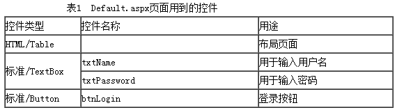

全面解析SQL存储过程
存储过程(Stored Procedure)，是一组为了完成特定功能的SQL 语句，类似一门程序设计语言，也包括了数据类型、流程控制、输入和输出和它自己的函数库。存储过程可以说是一个记录集，它是由一些T-SQL语句组成的代码块，这些T-SQL语句代码像一个方法一样实现一些功能（对单表或多表的增删改查），然后再给这个代码块取一个名字，在用到这个功能的时候调用他就行了。
存储过程的优点
- 存储过程只在创造时进行编译，以后每次执行存储过程都不需再重新编译，而一般SQL语句每执行一次就编译一次,所以使用存储过程可提高数据库执行速度，效率要比T-SQL语句高。
- 当对数据库进行复杂操作时，可将此复杂操作用存储过程封装起来与数据库提供的事务处理结合一起使用。
- 一个存储过程在程序在网络中交互时可以替代大堆的T-SQL语句，所以也能降低网络的通信量，提高通信速率。
- 存储过程可以重复使用，可减少数据库开发人员的工作量。
- 安全性高，可设定只有某些用户才具有对指定存储过程的使用权。
存储过程基本语法
--------------创建存储过程-----------------
CREATE PROC [ EDURE ] procedure_name [ ; number ]
[ { @parameter data_type }
[ VARYING ] [ = default ] [ OUTPUT ]
] [ ,...n ]
[ WITH
{ RECOMPILE | ENCRYPTION | RECOMPILE , ENCRYPTION } ]
[ FOR REPLICATION ]
AS sql_statement [ ...n ]
--------------调用存储过程-----------------
EXECUTE Procedure_name '' --存储过程如果有参数，后面加参数格式为：@参数名=value，也可直接为参数值value
--------------删除存储过程-----------------
drop procedure procedure_name --在存储过程中能调用另外一个存储过程，而不能删除另外一个存储过程
创建存储过程的参数
procedure_name：存储过程的名称，在前面加#为局部临时存储过程，加##为全局临时存储过程。number：是可选的整数，用来对同名的过程分组，以便用一条 DROP PROCEDURE 语句即可将同组的过程一起除去。例如，名为 orders 的应用程序使用的过程可以命名为 orderproc;1、orderproc;2 等。DROP PROCEDURE orderproc 语句将除去整个组。如果名称中包含定界标识符，则数字不应包含在标识符中，只应在 procedure_name 前后使用适当的定界符。@parameter：存储过程的参数。可以有一个或多个。用户必须在执行过程时提供每个所声明参数的值（除非定义了该参数的默认值）。存储过程最多可以有 2100 个参数。
使用 @ 符号作为第一个字符来指定参数名称。参数名称必须符合标识符的规则。每个过程的参数仅用于该过程本身；相同的参数名称可以用在其它过程中。默认情况下，参数只能代替常量，而不能用于代替表名、列名或其它数据库对象的名称。有关更多信息，请参见 EXECUTE。data_type：参数的数据类型。所有数据类型（包括 text、ntext 和 image）均可以用作存储过程的参数。不过，cursor 数据类型只能用于 OUTPUT 参数。如果指定的数据类型为 cursor，也必须同时指定 VARYING 和 OUTPUT 关键字。有关 SQL Server 提供的数据类型及其语法的更多信息，请参见数据类型。
说明对于可以是 cursor 数据类型的输出参数，没有最大数目的限制。VARYING：指定作为输出参数支持的结果集（由存储过程动态构造，内容可以变化）。仅适用于游标参数。default： 参数的默认值。如果定义了默认值，不必指定该参数的值即可执行过程。默认值必须是常量或 NULL。如果过程将对该参数使用 LIKE 关键字，那么默认值中可以包含通配符（%、_、[] 和 [^]）。OUTPUT：表明参数是返回参数。该选项的值可以返回给 EXEC[UTE]。使用 OUTPUT 参数可将信息返回给调用过程。Text、ntext 和 image 参数可用作 OUTPUT 参数。使用 OUTPUT 关键字的输出参数可以是游标占位符。RECOMPILE: 表明 SQL Server 不会缓存该过程的计划，该过程将在运行时重新编译。在使用非典型值或临时值而不希望覆盖缓存在内存中的执行计划时，请使用 RECOMPILE 选项。ENCRYPTION: 表示 SQL Server 加密 syscomments 表中包含 CREATE PROCEDURE 语句文本的条目。使用 ENCRYPTION 可防止将过程作为 SQL Server 复制的一部分发布。 说明在升级过程中，SQL Server 利用存储在 syscomments 中的加密注释来重新创建加密过程。FOR REPLICATION:指定不能在订阅服务器上执行为复制创建的存储过程。.使用 FOR REPLICATION 选项创建的存储过程可用作存储过程筛选，且只能在复制过程中执行。本选项不能和 WITH RECOMPILE 选项一起使用。- AS:指定过程要执行的操作。
sql_statement:过程中要包含的任意数目和类型的 Transact-SQL 语句。但有一些限制。
实例操作学习
下面通过表Student来具体了解一下存储过程，因为是要了解存储过程的简单用法，所以例子很简单。
无参数存储过程
选出Student表中的所有信息
create proc StuProc
as //此处 as 不可以省略不写
begin //begin 和 end 是一对，不可以只写其中一个，但可以都不写
select S#,Sname,Sage,Ssex from student
end
go
有参数存储过程
全局变量
全局变量也称为外部变量，是在函数的外部定义的，它的作用域为从变量定义处开始，到本程序文件的末尾。
选出指定姓名的学生信息:
create proc StuProc
@sname varchar(100)
as
begin
select S#,Sname,Sage,Ssex from student where sname=@sname
end
go
exec StuProc '赵雷' //执行语句
上面是在外部给变量赋值，也可以在内部直接给变量设置默认值
create proc StuProc
@sname varchar(100)='赵雷'
as
begin
select S#,Sname,Sage,Ssex from student where sname=@sname
end
go
exec StuProc
也可以把变量的内容输出，使用output
create proc StuProc
@sname varchar(100),
@IsRight int output //传出参数
as
if exists (select S#,Sname,Sage,Ssex from student where sname=@sname)
set @IsRight=1
else
set @IsRight=0
end
go
declare @IsRight int
exec StuProc '赵雷' , @IsRight output
select @IsRight
局部变量
局部变量也称为内部变量。局部变量是在函数内作定义说明的。其作用域仅限于函数内部，离开该函数后再使用这种变量是非法的。
局部变量的定义
必须先用Declare命令定以后才可以使用，declare{@变量名 数据类型}
局部变量的赋值方法
set{@变量名=表达式}或者select{@变量名=表达式}
局部变量的显示
create proc StuProc
as
declare @sname varchar(100)
set @sname='赵雷'
select S#,Sname,Sage,Ssex from student where sname=@sname
go
exec StuProc
那如果是要把局部变量的数据显示出来怎么办呢？
create proc StuProc
as
declare @sname varchar(100)
set @sname=(select Sname from student where S#=01)
select @sname
go
exec StuProc
更详细的实例操作学习
比如，在SQL Server查询编辑器窗口中用CREATE PROCEDURE语句创建存储过程PROC_InsertEmployee，用于实现向员工信息表（tb_Employee）中添加信息，同时生成自动编号。其SQL语句如下：
IF EXISTS (SELECT name
FROM sysobjects
WHERE name = 'Proc_InsertEmployee'
AND type = 'P')
DROP PROCEDURE Proc_InsertEmployee
GO
CREATE PROCEDURE Proc_InsertEmployee
@PName nvarchar(50),
@PSex nvarchar(4),
@PAge int,
@PWage money
AS
begin
declare @PID nvarchar(50)
select @PID=Max(员工编号) from tb_Employee
if(@PID is null)
set @PID='P1001'
else
set @PID='P'+cast(cast(substring(@PID,2,4) as int)+1 as nvarchar(50))
begin
insert into tb_Employee values(@PID,@PName,@PSex,@PAge,@PWage)
end
end
go
存储过程的修改
创建完存储过程之后，如果需要重新修改存储过程的功能及参数，可以在SQL Server 2005中通过以下两种方法进行修改：一种是用Microsoft SQL Server Mangement修改存储过程；另外一种是用T-SQL语句修改存储过程。
使用Microsoft SQL Server Mangement修改存储过程，步骤如下：
- 在SQL Server Management Studio的“对象资源管理器”中，选择要修改存储过程所在的数据库（如：db_18），然后在该数据库下，选择“可编程性”。
- 打开“存储过程”文件夹，右键单击要修改的存储过程（如：PROC_SEINFO），在弹出的快捷菜单中选择“修改”命令，将会出现查询编辑器窗口。用户可以在此窗口中编辑T-SQL代码，完成编辑后，单击工具栏中的“执行（X）”按钮，执行修改代码。用户可以在查询编辑器下方的Message窗口中看到执行结果信息。
使用Transact-SQL修改存储过程：
使用ALTER PROCEDURE语句修改存储过程，它不会影响存储过程的权限设定，也不会更改存储过程的名称。
语法：
ALTER PROC [ EDURE ] procedure_name [ ; number ]
[ { @parameter data_type }
[ VARYING ] [ = default ] [ OUTPUT ]
] [ ,...n ]
[ WITH
{ RECOMPILE | ENCRYPTION
| RECOMPILE , ENCRYPTION }
]
[ FOR REPLICATION ]
AS
sql_statement [ ...n ]
参数说明
procedure_name：是要更改的存储过程的名称。
交叉链接：关于ALTER PROCEDURE语句的其他参数与CREATE PROCEDURE语句相同，可参见上面的“创建存储过程的参数”。
例如，修改存储过程PROC_SEINFO，用于查询年龄大于35的员工信息。SQL语句如下：
ALTER PROCEDURE [dbo].[PROC_SEINFO]
AS
BEGIN
SELECT * FROM tb_Employee where 员工年龄>35
END
存储过程的删除
使用Microsoft SQL Server Mangement删除存储过程，步骤如下：
- 在SQL Server Management Studio的“对象资源管理器”中，选择要删除存储过程所在的数据库（如：db_student），然后在该数据库下选择“可编程性”。
- 打开“存储过程”文件夹，右键单击要删除的存储过程（如：PROC_SEINFO），在弹出的快捷菜单中选择“删除”命令。
- 单击“确定”按钮，即可删除所选定的存储过程。
注意：删除数据表后，并不会删除相关联的存储过程，只是其存储过程无法执行。
使用T-SQL删除存储过程：
DROP PROCEDURE语句用于从当前数据库中删除一个或多个存储过程或过程组。
语法：
DROP PROCEDURE { procedure } [ ,...n ]
参数说明：
- Procedure：是要删除的存储过程或存储过程组的名称。过程名称必须符合标识符规则。可以选择是否指定过程所有者名称，但不能指定服务器名称和数据库名称。
- n：是表示可以指定多个过程的占位符。
例如删除PROC_SEINFO存储过程的SQL语句如下：
DROP PROCEDURE PROC_SEINFO
例如，删除多个存储过程proc10、proc20和proc30：
DROP PROCEDURE proc10, proc20, proc30
例如，删除存储过程组procs（其中包含存储过程proc1、proc2、proc3）：
DROP PROCEDURE procs
注意：SQL语句DROP不能删除存储过程组中的单个存储过程。
应用存储过程验证用户登录身份：
目前，验证用户登录身份的方法有多种，而通过调用存储过程来实现用户身份验证是目前最好的解决方案之一。因为存储过程在创建时即在服务器上进行编译，所以执行起来比单个SQL语句要快得多。
本例是通过调用存储过程来验证用户登录的用户名和密码是否正确。运行本实例，在“用户名”和“密码”文本框中输入相应的用户名和密码，单击“登录”按钮即可。
程序开发步骤：
- 新建一个网站，将其命名为”index”，默认主页名为Default.aspx。
- Default.aspx页面涉及到的控件如表1所示。

- 主要程序代码如下。
打开SQL Server Management Studio，并连接到SQL Server2005中的数据库。单击工具栏中“ ”按钮，新建查询编辑器。在该查询编辑器中，创建验证登录用户身份的存储过程PROC_EXISTS，具体的SQL语句如下：
CREATE PROC PROC_EXISTS
(
@UserName NVARCHAR(20),
@PassWord NVARCHAR(20),
@ReturnValue int OUTPUT
)
AS
IF EXISTS(select * from tb_member where userName=@UserName AND passWord=@PassWord)
set @ReturnValue= 100
ELSE
set @ReturnValue= -100
GO
在”登录”按钮的Click事件下，执行验证登录用户身份的存储过程，如果输入的用户名和密码正确，则弹出对话框提示用户登录成功，代码如下：
protected void btnLogin_Click(object sender, EventArgs e)
{
//连接数据库
myConn = new SqlConnection(ConfigurationManager.AppSettings["ConnectionString"].ToString());
myCmd = new SqlCommand("PROC_EXISTS", myConn); //调用存储过程，判断用户是否存在
myCmd.CommandType = CommandType.StoredProcedure;
//为存储过程的参数赋值
SqlParameter userName=new SqlParameter("@UserName", SqlDbType.NVarChar, 20);
userName.Value=this.txtName.Text.Trim();
myCmd.Parameters.Add(userName);
SqlParameter passWord=new SqlParameter("@PassWord", SqlDbType.NVarChar, 20);
passWord.Value = this.txtPassword.Text.Trim();
myCmd.Parameters.Add(passWord);
//指出该参数是存储过程的OUTPUT参数
SqlParameter ReturnValue = new SqlParameter("@ReturnValue",SqlDbType.Int ,4);
ReturnValue.Direction = ParameterDirection.Output;
myCmd.Parameters.Add(ReturnValue);
try
{
myConn.Open();
myCmd.ExecuteNonQuery();
if (int.Parse(ReturnValue.Value.ToString()) == 100)
{
Response.Write("<script>alert('您是合法用户，登录成功！')</script>");
return;
}
else
{
Response.Write("<script>alert('您输入的用户名和密码不正确，请重新输入！')</script>");
return;
}
}
catch(Exception ex)
{
Response.Write(ex.Message.ToString());
}
finally
{
myConn.Close();
myConn.Dispose();
myCmd.Dispose();
}}